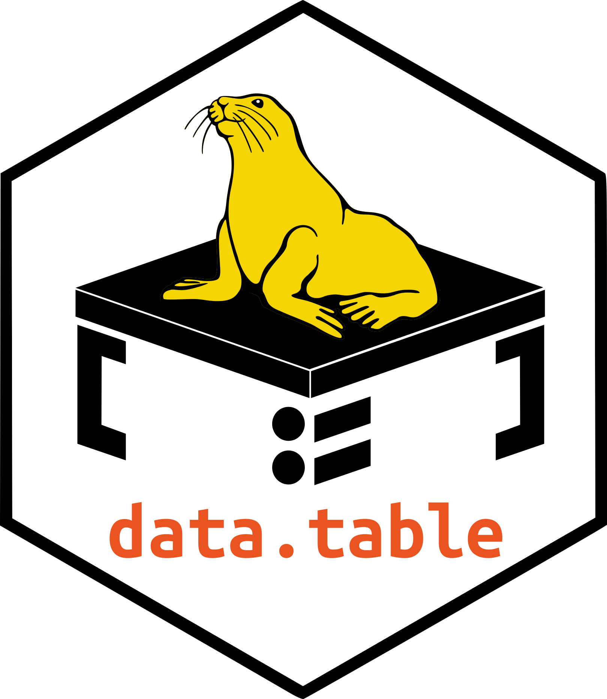
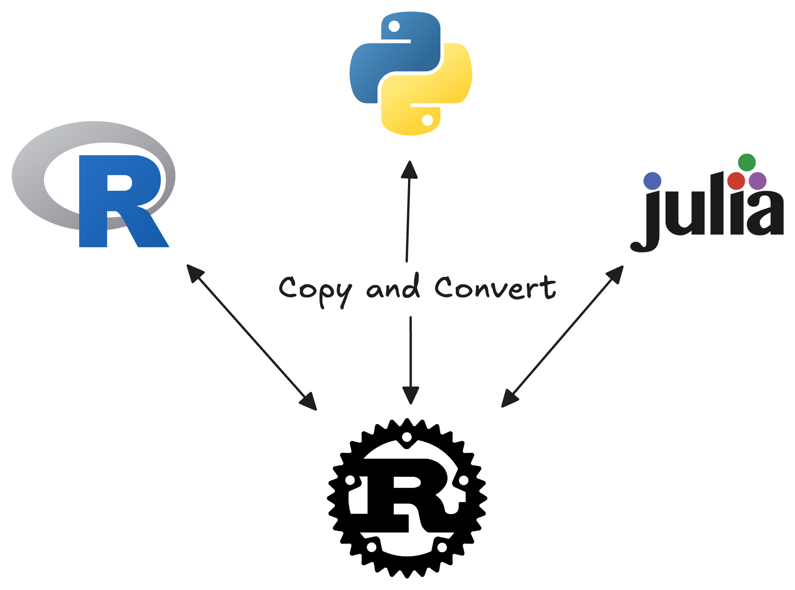
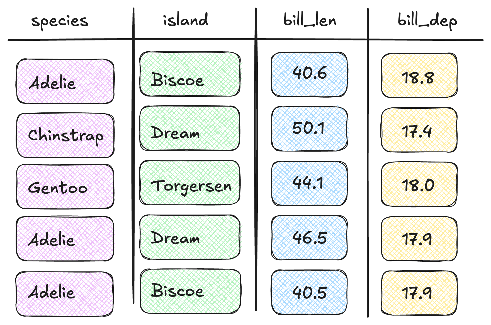
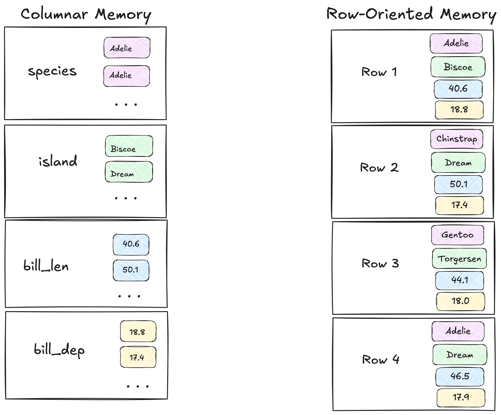
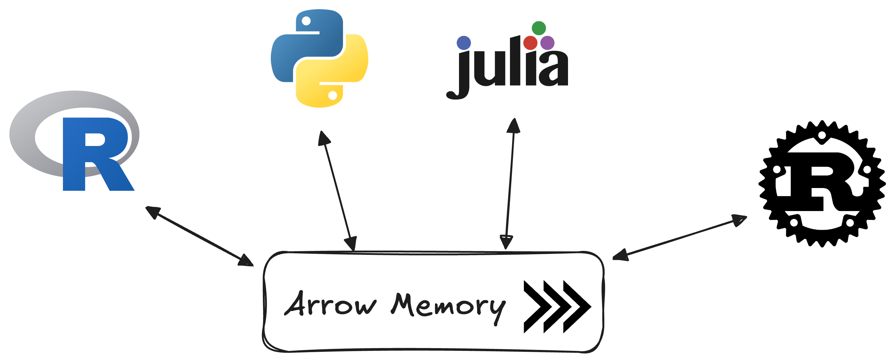
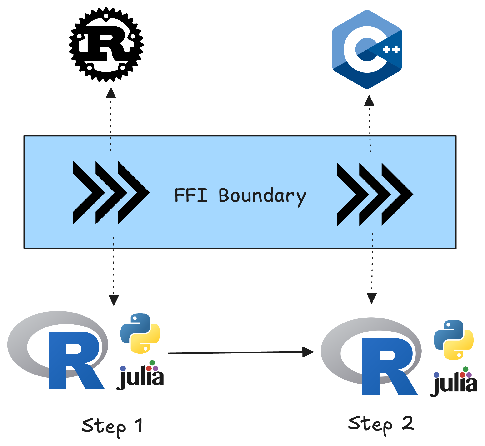
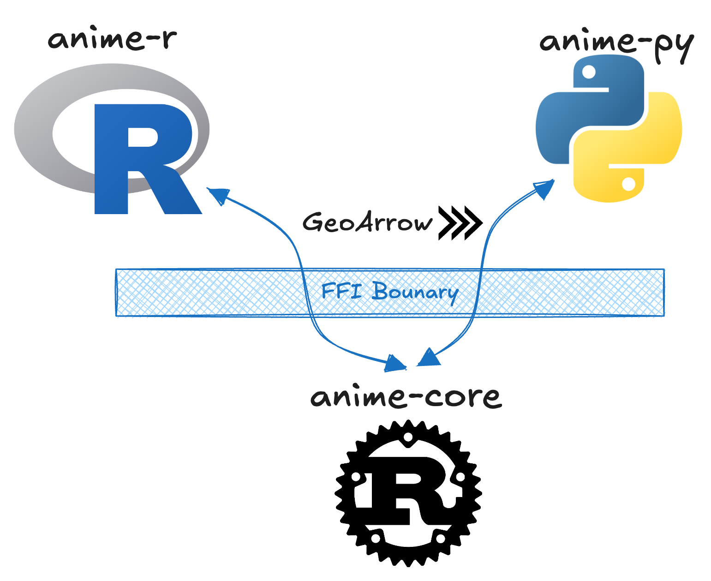

Apache Arrow, Rust, and cross-langauge data science
TL;DR
- Apache Arrow standardized memory layout so that memory can be used in any language without (de)serialization.
- Rust is a great candidate for building core algorithm / tool implementations as it has robust foreign function interface (FFI) tooling and bindings tools like extendr, PyO3, and jlrs.
- Use Apache Arrow as inputs and outputs from the tool standardize the API across languages.
The Status Quo
I would categorize the majority of scientific computing libraries as either:
- tightly coupled
- loosely coupled
Tightly coupled
Many of the most popular scientific computing libraries in R and Python are developed in a tightly coupled manner.


Julia is a different beast because it is inherently fast and native implementations are exceptionally performant.
For example {data.table} is one of the fastest data frame libraries in the world—and for a while was the fastest. It is developed in C directly with R’s C API.
NumPy is probably the most numerical computing library in the world. It is written directly in C with Cython and is intended for use directly with Python.
Pros
- Highly efficient
- Ergonomic APIs for the language
Cons
- Innovation and development siloed to the language of implementation
- Contributor pool shrinks to the intersection of C developers with knowledge of the language-specific C API
Loosely coupled
Loose coupling is another common approach to scientific computing and is pervasive in the geospatial ecosystem.
Core libraries such as GEOS, GDAL, and PROJ are written in C/++ with bindings to them in R, Python, Julia, and others.
There are many packages that have bindings to these libraries. However, due to the lack of standardized interface, the APIs that are developed may not work with each other even if they’re implemented in the same language.
Pros
- Innovations and development is not siloed
- Contributions to the core library can be propagated to the client bindings
Cons
- Little / no standardization of data format leads to tons of very different and incompatible libraries
- Using output from one library in another requires intermediate representation
Using Rust for a core library
It is not my intention to belabor the point of “why Rust.” But I will list out a few bullets for why I believe Rust is the best candidate for core implementations.
| Pro | Me belaboring the point |
|---|---|
| Rust is (fairly) easy to pick up. | I’ve tried and failed many times to learn C++. I’ve tried to learn Java. I’ve tried to learn Go. Nothing has the guide rails that Rust does. |
| Dependency free | Rust crates are compiled into a single shared library which has no dependencies to other libraries. More often than not there is also no system dependency requirement either. |
| Stupid fast by default 🚀 | The most naive implementations often out perform even advanced implementations in R or Python (and sometimes even Julia) |
Easy parallelization with rayon |
rayon allows you to parallelize your code with next to no effort. For example changing .iter() ➡️ .par_iter() is all you need. |
| Cross-platform support. | Rust libraries can support Windows, Mac, x86 and Arm, Linux, and WASM, all with no modification of the core library. That’s HUGE! |
Creating a Rust core would still be considered a “loose coupling.” Though, you do at least get the above benefits of using Rust. We can improve this experience a bit more by incorporating Apache Arrow into the picture.
Apache Arrow
Apache Arrow is a specification of what data should look like in memory (not stored as a file). Additionally, Apache Arrow is not the R package {arrow} and it is also not pyarrow. Those package are implementations of Arrow with additional goodies.
I really recommend reading Danielle Navarro’s blog post on Apache Arrow for a very human introduction to the topic.
The Problem
In this status-quo of cross-language tooling, we have this issue where data in R is represented differently than data is represented in Python, which is represented differently in Rust or Julia—and so on.

This process of copying data and converting is expensive and time consuming. The canonical example is that of a database.
We typically work with tabular data that looks like so

However, these databases typically represent data in a row-oriented manner. Where each row is stored in memory followed by the next row etc.
Columnar data
Instead, Apache Arrow is a columnar data format. Instead of each row being represented in memory, we have each column. This is a huge enhancement particularly for analytical processes where we are working with columns of data instead of _rows.

The above shows the difference between these.
Apache Arrow is a standized way of saying what data should look like in memory. So instead of copying and converting between each tool, we can use the same exact arrow data set by each tool .

Arrow and cross-langauge tooling
By adopting Apache Arrow as a standard memory format, we can have data science workflows that look something like this.

At step 1, we may call a library that uses Rust under the hood. But when we send data to it, it uses Apache Arrow, and it also gives us back Arrow. Then in the next step, we use our Arrow data to call out to a C++ library which also accepts and returns Arrow.
Doing this will eliminate the overhead of copying and converting data to each tool’s desired format. This also helps us move towards a standardized API that shouldn’t be too different between language binding. Also, by using the same data format, even if there are multiple bindings to the same underlying library, if they all accept Arrow, there is no cost incurred by sending data to them.
A real example
A real world example of this is the ANIME algorithm that I developed along with Dr. Robin Lovelace.
Approximate Network Integration, Matching, and Enrichment (ANIME) is a partial line matching algorithm that is written in Rust with bindings to it in both R and Python—no Julia bindings, so if you’re interested in building them, please help!

The ANIME crate is designed to work GeoArrow data.
Repo structure
I use a monorepo structure to accomplish this where the core algorithm is implemented in /rust and the R bindings in r/ and the python bindings in /python.
.
├── rust/
│ └── Cargo.toml
├── r/
│ └── src/rust/Cargo.toml
└── py/
└── Cargo.tomlThe result is bindings with a very similar API and identical results:
R Bindings
library(sf)
library(anime)
targets <- read_sf("maine-osm-targets.fgb")
sources <- read_sf("maine-tigris-sources.fgb")
matches <- anime(
source = sources,
targets = targets,
distance_tolerance = 10,
angle_tolerance = 5
)Python Bindings
from anime import PyAnime
from geoarrow.rust.io import read_flatgeobuf
target = read_flatgeobuf("maine-osm-targets.fgb")
sources = read_flatgeobuf("maine-tigris-sources.fgb")
anime = PyAnime(
source = sources.column("").chunk(0),
target = target.column("").chunk(0),
distance_tolerance = 10,
angle_tolerance = 5
)Arrow FFI helpers
There still exists a challenge of taking Arrow from R, Python, or Julia and getting it across the language barrier.
To do so from R with extendr is arrow-extendr. And from Python is arro3.
A quick caveat
ANIME is not a perfectly fleshed out example. At present, the core rust library does not return Arrow but it is designed to work with the geoarrow-rust library. The current bindings are a loose-ish coupling approach where on the extendr and PyO3 side the results are processed into a data.frame and Arrow Table respectively.
Call to action if you’re interested in contributing Julia bindings or improving the Python bindings (and maybe publishing them), please do make a PR or an issue.